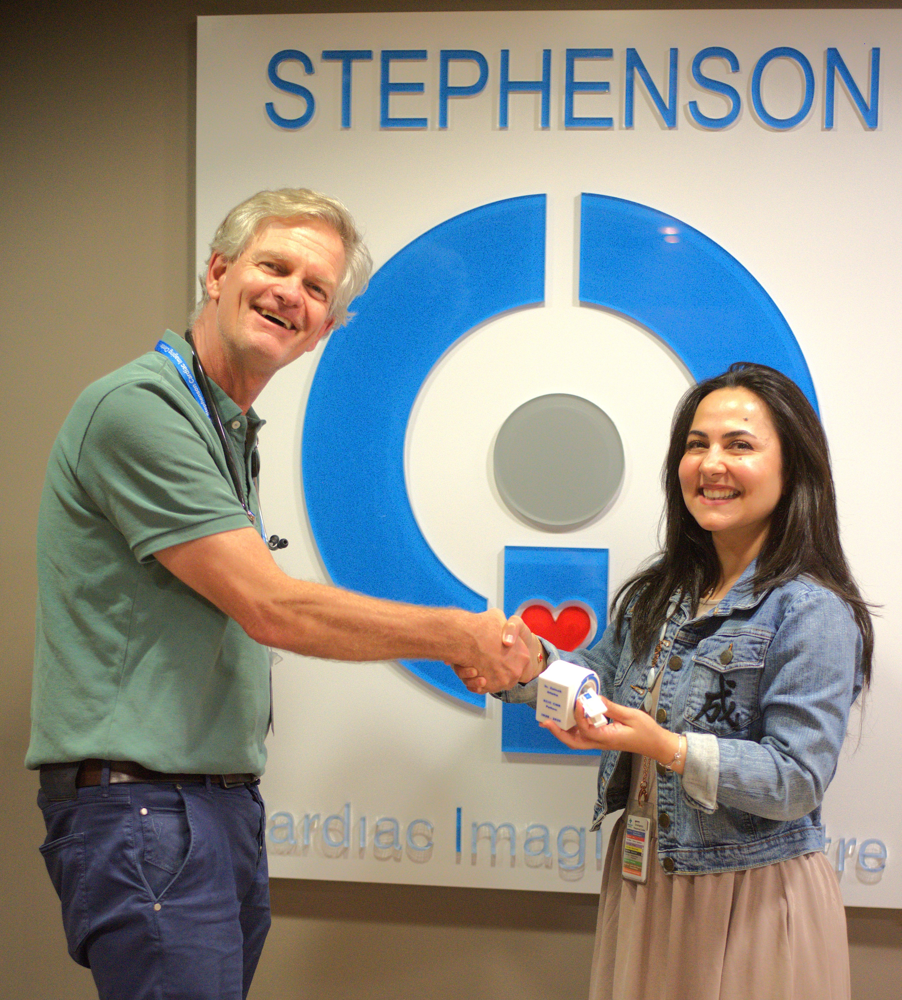

The SCIC CMR fellowship offers one year of advanced clinical and technical training in cardiovascular MRI. Fellows are immersed in daily case interpretation, protocol review, post-processing, scanner-based learning, and research activity under faculty supervision.
SCIC alumni lead cardiac imaging programmes at major academic centres across North America, Europe, and beyond. Our fellows graduate with the clinical competence, research experience, and professional network to thrive in academic cardiac imaging.
Interpret cardiac MRI cases during the year alongside faculty
Protected research participation with active mentorship for a publication-quality project
Hands-on training with 1.5T & 3T scanners, 4D flow, T1/T2 mapping, and AI-assisted analysis

Celebrating CMR fellowship training completion of Dr. Zainab Althaha (right) at the Stephenson Cardiac Imaging Centre with Prof. Dr. Marco Gotte (left).
SCIC welcomes trainees interested in cardiovascular MRI research, including graduate students, undergraduate students, clinical fellows, and visiting researchers. Projects may span clinical CMR, advanced tissue characterization, 3D LGE, ECG-MRI, 4D flow, quantitative perfusion, interventional CMR, and image analysis.
3D LGE, mapping, perfusion, 4D flow, and real-time MRI
Supervised by clinicians, scientists, MR technologists, engineers, and students
Research questions grounded in high-volume clinical CMR practice
Automated segmentation, radiomics, predictive modelling
MHD artefact correction, ECGi integration, real-time denoising
5D cine, ultra-fast real-time imaging, gadolinium-free protocols
MRI-guided catheterization, ablation lesion visualization
Aortic disease, BAV, flow-based biomarkers
Prospective MSc and PhD students should contact the relevant supervisor directly with a CV and brief statement of interest. Undergraduate research studentships are available during summer terms — email info@scic.ca for details.
SCIC offers regular educational events for cardiologists, radiologists, technologists, and trainees looking to build or deepen their cardiac MRI expertise.
A comprehensive yearly course covering fundamentals and advanced applications of cardiac MRI. Lectures, hands-on workshops, and case-based learning from SCIC faculty and international guest speakers.
An informal networking event held alongside our annual course. Referring cardiologists, imaging specialists, researchers, and industry partners connect and discuss the future of cardiac imaging.
An intensive one-day session focused on CMR image interpretation. Participants work through curated clinical cases under expert guidance. Ideal for cardiologists building their reading skills.
Our educational events are accredited for Continuing Medical Education (CME) credits. We are working to formalize CME accreditation for all SCIC courses and events.
For questions about CME accreditation, eligibility, or to discuss your educational needs, please get in touch.
Whether you're a fellow, a resident, or an established cardiologist expanding your CMR knowledge.
A practical introduction to cardiac MRI physics — from spin echoes to SSFP sequences — designed for the clinician, not the engineer.
Download PDF →Annotated cardiac MRI cases across all major clinical indications, with expert commentary and teaching points. Updated quarterly.
Browse Cases →Standard SCIC CMR protocols by indication, including sequence parameters, preparation steps, and reporting templates.
View Protocols →For current eligibility, required materials, contacts, and application instructions, please visit the official Libin Cardiovascular Institute training programs page.